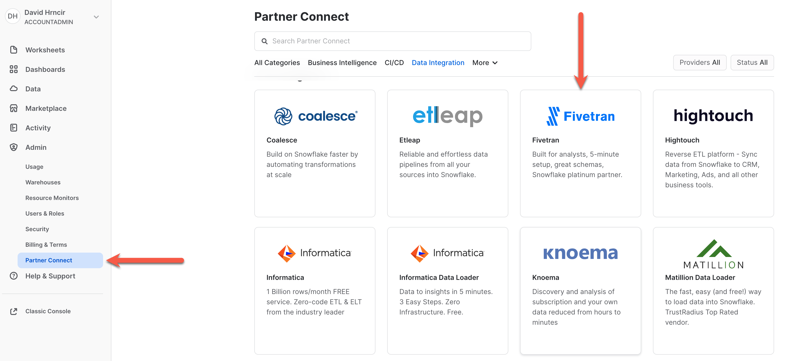
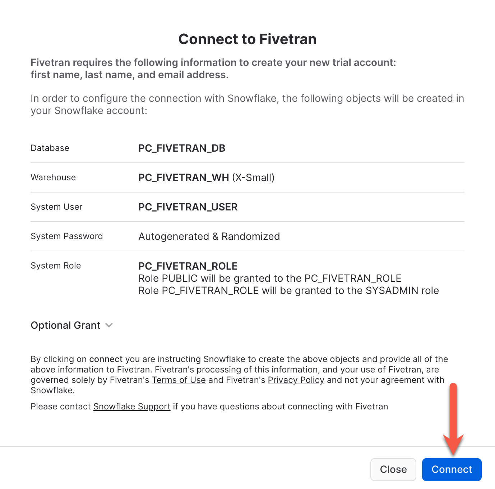
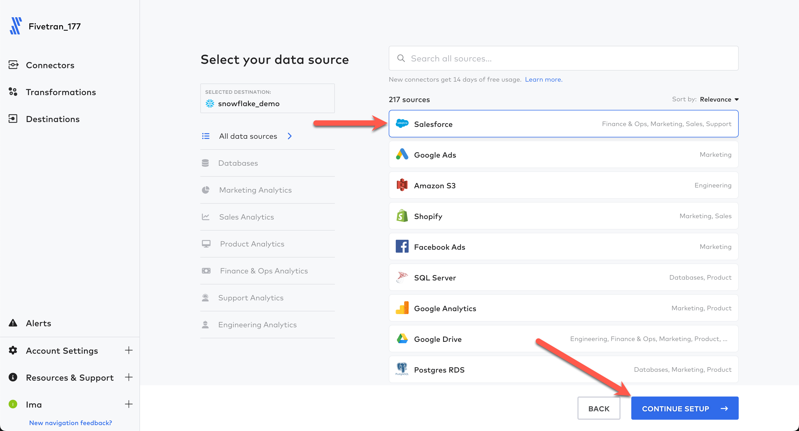
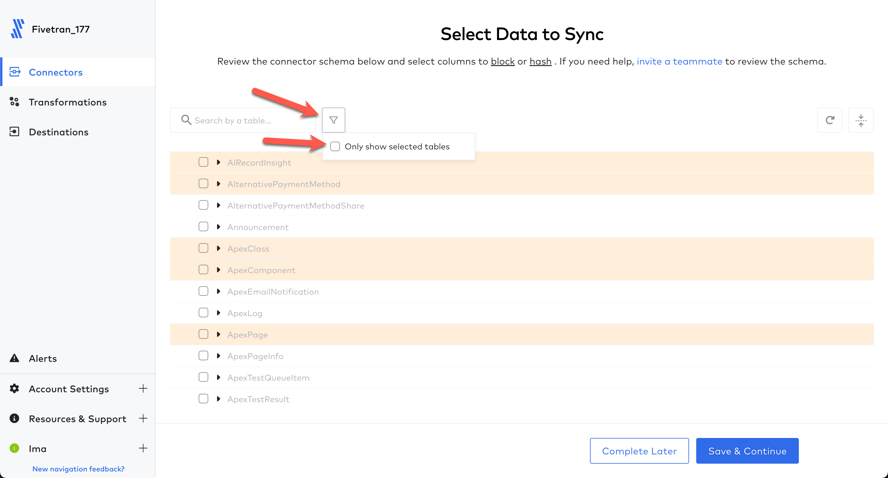
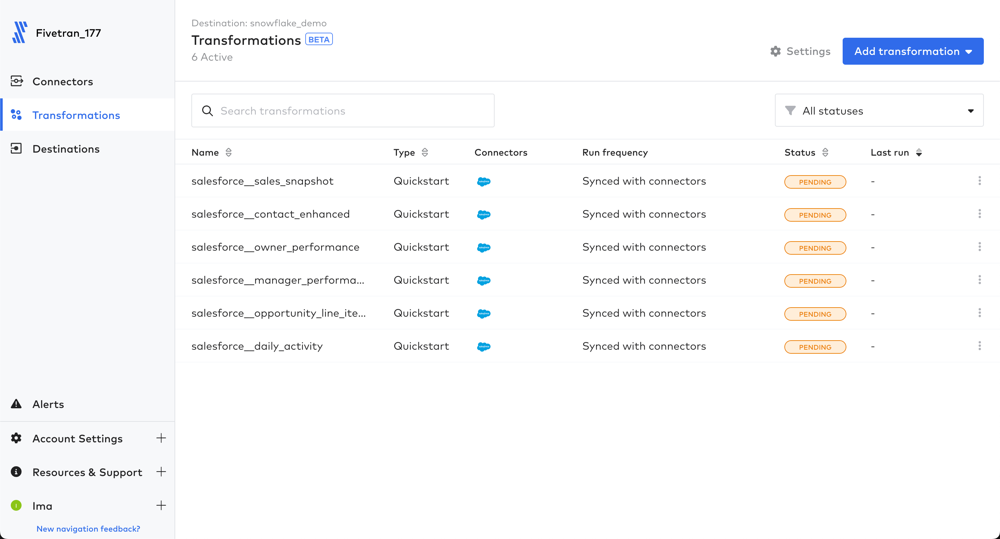
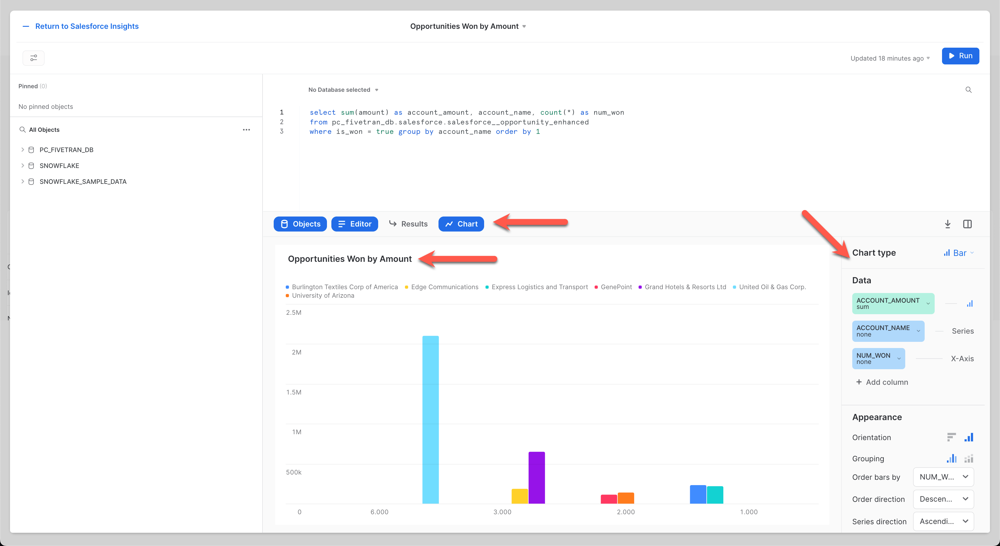
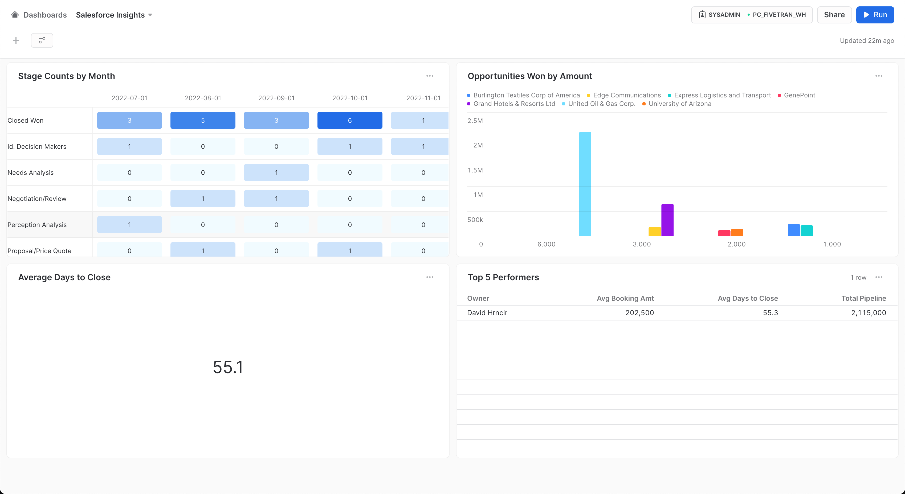

Your sales are the driving factor for your company. Your Salesforce data is a wealth of information just waiting to be tapped. Salesforce is an incredible product and an industry leader. But what happens when you exhaust all options within Salesforce reporting? Moreover, what happens when you want to cross reference your Salesforce data with ad campaign or live event data from 2, 3, 10, or more data sources as well as custom data sources?
These data consolidation, centralization, curation, and analytics processes "used" to be daunting, complex, expensive, and time consuming. But not anymore. Thanks to Snowflake and Fivetran!
Fivetran will replicate all of your data from Salesforce, and all of your other data sources for your project, easily into Snowflake via a reliable, fast, secure, SaaS-based, automated, and no-code data replication solution with built-in transformation flexibility. Fivetran's 300+ data source connectors (that's right 300+...we are just working with Salesforce today) allow you to seamlessly create all of your data replication processes in minutes versus weeks or months. And in this lab, we are going to work together to see how easy and fast data replication with Fivetran and Snowflake can be. So let's get started!
Prerequisites
- Existing Snowflake account, or a new Snowflake trial account, with
ACCOUNTADMINrole. If setting up a new trial account, ensure to select the "Enterprise" edition when prompted to gain access to more Snowflake features! - Salesforce development account. Setting up a Salesforce developer account is free and takes about 3-5 minutes. If you currently have a Salesforce account and wish to use that account for this lab...even better!
What you'll learn in the lab
- How to leverage Snowflake Partner Connect to create a Fivetran account
- How to create/configure a Fivetran Salesforce connector
- How to use Fivetran's Quickstart Data Models to transform the raw data into analytics models
- How to setup a Snowflake Dashboard to harness the Fivetran prebuilt Salesforce data models
What you'll need
- All you'll need is a modern browser like Chrome
What you'll build
- A
NO-CODESalesforce data pipeline powered by Fivetran and Snowflake - Prebuilt, ready-to-query data models:
- Via Fivetran, no-code, Quickstart Data Models powered by dbt Core (no installs or account needed)
- Transformed by Snowflake's massive parallel processing (MPP) engine
- A Snowflake dashboard giving immediate insights into your Salesforce data
All in less than 40 minutes!
The outcome of this step is to:
- Have a Snowflake account with all the objects needed for Fivetran to ingest data (account, user, role, warehouse, database)
- Have a Fivetran account with a Snowflake destination setup ready to receive data
The easiest option to get started with Fivetran and Snowflake is to use Snowflake Partner Connect. Partner connect allows you to quickly create a Fivetran trial account and configures the default Snowflake destination within Fivetran in one easy step.
Partner Connect
Ensure you are in the Snowflake UI as an ACCOUNTADMIN. Expand Admin, click Partner Connect, under Data Integration click the Fivetran tile. 
Once the tile is clicked you will be presented with the Fivetran configuration screen below. Click the Connect button. 
Click Activate. You will be prompted to enter a Fivetran password. Record this password. This will be your password into the Fivetran UI. That's it! That will create the free 14 day Fivetran trial account, build your default Snowflake destination within Fivetran, and configure the Snowflake objects needed to ingest data via Fivetran.
Non-Partner Connect Only
Ok, let's get our data from Salesforce into Snowflake via the quickest, easiest, and most reliable method available in the world today...Fivetran! Ensure you are logged into your Fivetran account.
Click Explore/Add Connectors: 
Click the Salesforce connector and then click Continue Setup: 
Leave the Destination schema as salesforce and click Authorize. This will start the authentication process for Salesforce. If you are already signed in to Salesforce in the browser, this will take the current authorization token of your sign in. If you are not currently signed in, you will be presented with the Salesforce sign in page. Simply enter your credentials to sign in to Salesforce. Upon sign in, you will be redirected back to the Fivetran configuration UI. 
You will see that the authentication is successful. Click Save & Test. 
Fivetran will validate the authentication token to ensure Fivetran can call the Salesforce API. Click Continue. 
Next you will select the tables to replicate. Salesforce contains over 900 tables. Let's only select the ones we need here today. Click the minus sign twice which will deselect all tables. 
Then let's make this easy and use the filter textbox to only find and select the tables we want to replicate. Below is the list of tables we want to select (please be sure to choose the exact name). Note that once you select a table and begin a new filter, the selected table(s) stay checked...even though the selected tables may go out of view. Repeat the search and select process for each table below until all are selected.
- Account
- Contact
- Event
- Lead
- Opportunity
- OpportunityLineItem
- Order
- Product2
- Task
- User
- UserRole

When done with all of the above adds, click the filter icon and check the Only show selected tables checkbox. 
The filtered view should be as shown below. If so, click Save & Continue. 
Leave the schema changes setting as Allow All. Click Continue. 
With that, we are ready to go! Let's sync data. Click Start Initial Sync. And let Fivetran seamlessly replicate your data into Snowflake. This should only take a minute or two at most. Now, let's move on to transformations! 
Fivetran is going to replicate your Salesforce data into a fully normalized Snowflake schema. Now to make the data easier to query for our dashboard/use cases, let's transform it. Fivetran gives you the ability, and is ever expanding, to utilize dbt Core data modeling to further curate your data with NO CODE! These transformations are called Fivetran Quickstart Data Models. Let's configure these now.
From the Fivetran UI, click Transformations in the left navbar. Then in the Quickstart section, click Get Started. 
In the configuration page, for Source Type choose Salesforce. Source Type represents the type of connector used. In our case, we created a Salesforce connector. For Connector, choose your Salesforce connector. If you left the schema names the same in the configuration, your connector will also be named salesforce. ‘Connector' here represents the name/schema name given to your Salesforce connector during the connector configuration. 
Scroll down on the configuration screen and under Set Schedule select Fully integrated, then click Save. 
The transformations are now configured and will show a status of Pending. 
The adding of transformations to your connector will signal the connector to perform a resync. You may click on the Connectors section on the left navbar, then open your connector to watch it execute a resync. When the resync completes, Fivetran will start the transformation jobs and change the status to Running. Like the data replication, this should only take a minute or two to complete. 
Once the transformations complete, you will see new objects in the Snowflake database. The objects prefixed with ‘SALESFORCE__' are models ready to query to assist us in our use cases and dashboard. Objects prefixed with ‘STG_' are staging objects used to build the final models and are rebuilt upon every transformation run. (The below Snowflake images display the objects built by the Quickstart Data Models...no further action needed on these tables/views!) 
In the Fivetran UI, you can view the lineage for any of the transformation jobs just by clicking the transformation job from the Transformations UI (salesforce__sales_snapshot shown below). 
Recap
Now that our models are built and ready to query, let's build some insights into your data! For the purposes of this lab, we will build a four tile dashboard within Snowflake. The SQL and accompanying screenshot of each tile setup is given below. NOTE: Only change the SQL if your database and/or schema name do not match below.
Snowflake Dashboard
Click the Dashboards item in the left navbar. This will display the Dashboard UI. Click + Dashboard in the upper right to begin the dashboard creation process. 
Next give your dashboard a name and click Create Dashboard. 
Then it's time to start building tiles. See the image below. Ensure to set the role to sysadmin and the warehouse to pc_fivetran_wh. Click the + New Tile to get started with the first dashboard tile. 
Tiles in Snowflake
Tiles represent dashboard objects, and each tile represents a separate execution of SQL and visualization in the dashboard. Below is the process that can be followed for all tiles in this lab:
- After the
New TileorNew Tile from Worksheetbuttons are selected, a tile worksheet will be displayed like the ones below. - Copy and paste the SQL for each tile into the SQL section in the tile worksheet.
- Click the
Runbutton and ensure you are receiving results. Always use a full path in SQL for database.schema.table/view. - Set tile name and enable the chart display by clicking the
Chartbutton (except where a table is to be rendered like Tile #4). - To get the tiles to look like the ones in this lab, simply apply the metadata in the
Chart Typesection (except for Tile #4) on the right side of the UI to match the image in each tile section below.
Once all the tiles are created, you may move them around on the dashboard to your liking.
Tile 1: Stage Counts by Month - Heatgrid
select stage_name, close_date, amount
from pc_fivetran_db.salesforce.salesforce__opportunity_enhanced

Tile 2: Opportunities Won by Amount - Bar
select sum(amount) as account_amount, account_name, count(*) as num_won
from pc_fivetran_db.salesforce.salesforce__opportunity_enhanced
where is_won = true group by account_name order by 1

Tile 3: Average Days to Close - Score
select round(avg(days_to_close),1)
from pc_fivetran_db.salesforce.salesforce__opportunity_enhanced

Tile 4: Top 5 Performers - Table
select top 5 owner_name as "Owner", avg_bookings_amount as "Avg Booking Amt", round(avg_days_to_close,1) as "Avg Days to Close",
total_pipeline_amount as "Total Pipeline"
from pc_fivetran_db.salesforce.salesforce__owner_performance
where total_pipeline_amount is not null
order by total_pipeline_amount desc

Final Dashboard
Here is the example dashboard giving insights to the data for your use cases in minutes! 
The lab demonstrates the power, flexibility, reliability, and speed to insights by performing ELT with no code!
Here's what we did:
- Created a production-ready data pipeline from Salesforce to Snowflake via Fivetran in a few clicks!
- Utilized Fivetran's Quickstart Data Models to curate the data within Snowflake for easy consumption!
- Designed and built a Snowflake dashboard to give us valuable insights into our Salesforce data!
- All in less than 40 minutes!
- But don't stop here. Take this lab to the next level by adding more tiles and building more insights on your own!
Snowflake
See what other customers are doing with Snowflake and how Snowflake is the cloud data platform for your data workloads!
Fivetran
See why Fivetran is the ultimate automated data movement platform for any data source and why Fivetran is a Snowflake Elite Partner and Snowflake Data Integration Partner of the year!
Fivetran's mission is to "Make data as accessible and reliable as electricity!" Let us show you how we do it!